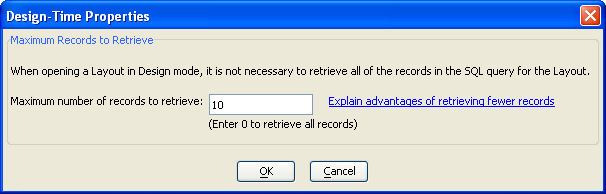

Working with SQL Reports
((|#Selecting_the_Data_Source|Selecting the Data Source))
((|#Specifying_a_SQL_SELECT_Statement|Specifying a SQL SELECT Statement))
((|#Refreshing_the_Report_s_Data|Refreshing the Report's Data))
((|#Redefining_the_Report_s_DataSource|Redefining the Report's DataSource))
There are 2 different approaches to building a SQL Report.
Create a named data source, then build one (or more) reports based on that data source definition. In this case you may edit the data source definition separately from the report. The report definition includes the name of the data source.
Create an ad hoc data source and report. In this case the report definition includes the definition of the data source. You cannot share this data source definition.
In addition there is an important distinct between the data source definition and the report definition.
The data source definition retrieves a set of records from a SQL database. The process of retrieving these records can use filter (WHERE or HAVING) and order (ORDER BY or GROUP BY) expressions.
The report definition works with the set of records specified by the data source definition. It can apply additional filter, order, or grouping expressions. These expressions will define what you see on the report.
To create a new report:
Display the Reports tab of the Control Panel.
Click New to display the New Report dialog.
Select "
" and click OK to display the Specify DataSource dialog. There are 2 methods for connecting to a data source:
Specifying a SQL SELECT Statement
Click Connect.
If you successfully connected to your database, click Next > to display the Specify SQL SELECT Statement dialog.
There are 2 ways to define a SQL SELECT statement.
When designing a report, it is not necessary or desirable to retrieve all the records that the report will ultimately display. You only need sufficient records to display a preview of how the final report will appear.
The advantage of retrieving fewer records is that your report will open up in the Report Editor more quickly because Alpha Five will not have to retrieve all of the records that your SQL query returns. If your query runs quickly, and does not return a very large number of records, then this advantage might not be important. Picture
{kind=link}

Leave the default value of 0 to retrieve all records, or enter the number of records you want to work with.
Click OK to display the Report Genie dialog or Cancel to exit from the report design process.
Select an option and click OK.
The <span class=Screen>Quick Report</span> genie is a preliminary step before using the <span class=Screen>Report Editor</span> that simplifies the process of selecting, grouping, and ordering records for a report.
The <span class=Screen>Report Editor</span> allows you to start specifying all the properties of your new report. These are the same properties set by the Quick Report genie.
 Note : When you create
a report in Alpha Five, you may specify new filter and order criteria
that select and order the records that appear in the report. These criteria
apply to the records that you have downloaded from the SQL database. The
result is that you may create a report that displays fewer records that
you initially downloaded, and they may be ordered in a different way.
Note : When you create
a report in Alpha Five, you may specify new filter and order criteria
that select and order the records that appear in the report. These criteria
apply to the records that you have downloaded from the SQL database. The
result is that you may create a report that displays fewer records that
you initially downloaded, and they may be ordered in a different way.
Once you have created and saved a SQL report, you will find it listed
on the Reports tab of the Alpha Five Control
Panel. Note that the Table/Set column
will list "
In this case
Select the report and click Design to open the Design-Time Properties dialog.
Optionally, if you want to retrieve new data to use to design the report:
Clear the Use cached data check box. The advantage of using cached data is that you will not have to wait for the Report Editor to execute the report's SQL query and retrieve new data.
Enter the maximum number of records to retrieve.
Click OK to display the <span class=Screen>Report Editor</span>.
At any time you can refresh the data that you are using for your report design.
Open the report in the Report Editor.
Click
 or Report > SQL Datasource > Refresh
data.
or Report > SQL Datasource > Refresh
data.
Redefining the Report's DataSource
On the Tables/Sets tab:
Right click the passive link table.
Select Passive Link Table > Edit DataSource definition... .
On the Reports tab:
If the Report Editor is open, close it to display the Report tab of the Control Panel.
Right click the SQL report and select SQL DataSource > Edit DataSource definition... .
Make a choice and click OK. The choices are:
Edit the existing data source (ad hoc or named)
Select a named data source
Define a new data source
The Show DataSource Definition dialog box shows where and how Alpha Five retrieved the data for a report.
Display the Reports tab of the Control Panel.
Right click a SQL Report and select SQL DataSource > Show DataSource Definition... to display the Show DataSource Definition dialog box.
Optionally, click Edit DataSource to display the <span class=Screen>Edit DataSource</span> dialog box. Here, you can respecify the data that is retrieved for the report.
To preview the records that a SQL Report will retrieve from a SQL database:
Display the Reports tab of the Control Panel.
Right click a SQL Report and select SQL DataSource > Preview Records in DataSource... .
Save Records in DataSource to a Local Table
Refer to Working with Passive Linked Tables.
See Also
Supported By
Alpha Five Version 7 and Above (Requires Enterprise Reporting License)